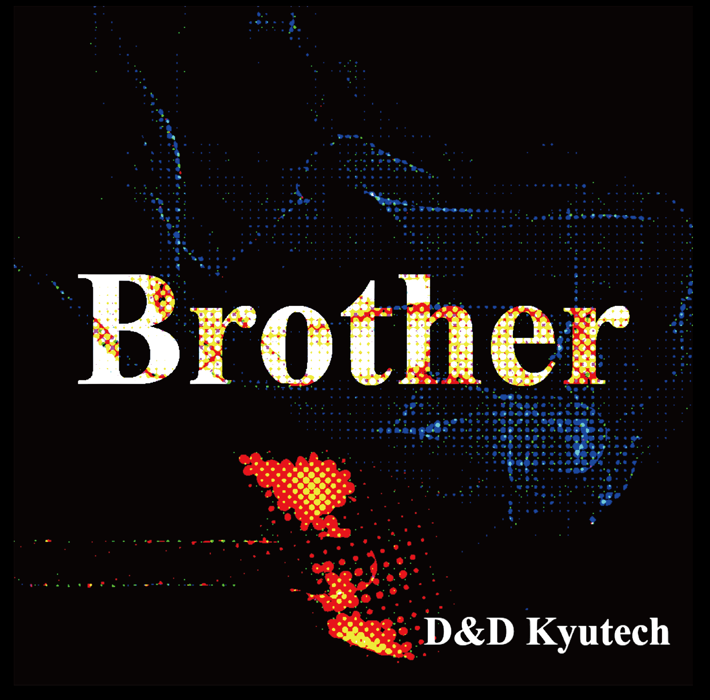
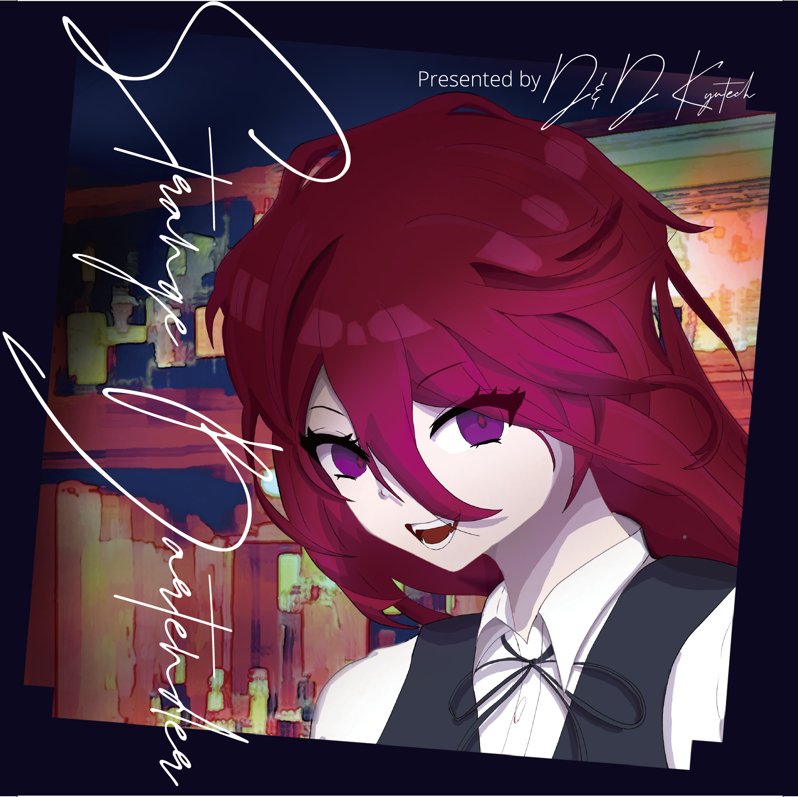
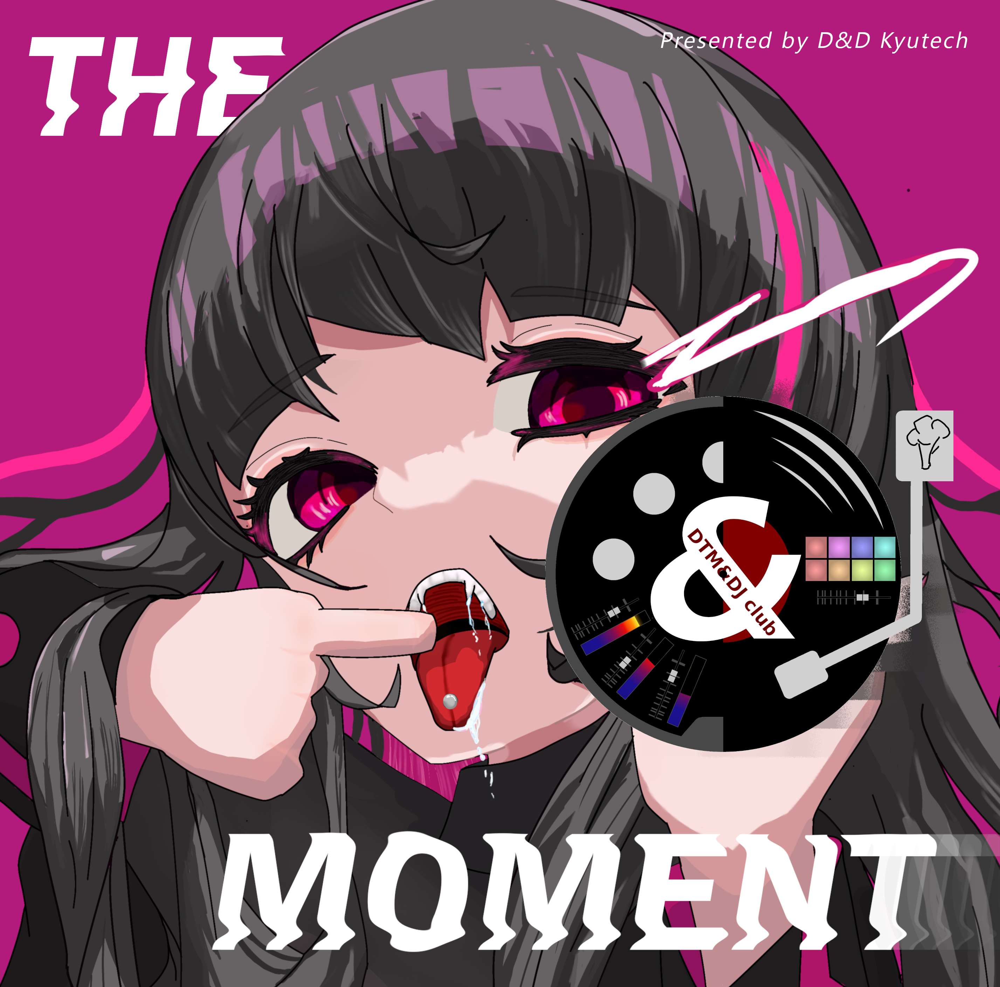
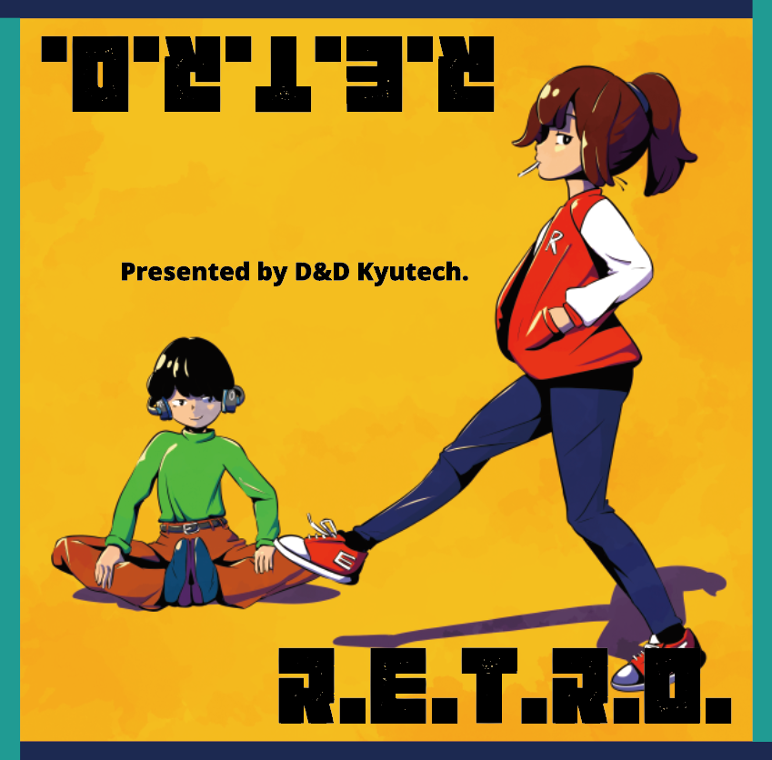

Works
楽曲

参加作品
-
M9th - "あたたかな部屋より"
-
- ギター演奏
-
D&D 1st Album "Brother"
- 
-
- "雨のち晴れ (Album Mix)"
- アルバムマスタリング
-
D&D 2nd Album "Strange Bartender"
- 
-
- "Amplify and Reflain(Strange Bartender mix)"
- "心の穴"
- "水蒸気"
- アルバムマスタリング
-
D&D 3rd Full Album "THE MOMENT"
- 
-
- ”just a moment"
- "void"
- アルバムマスタリング
- ジャケットデザイン
-
D&D 4th Album "R.E.T.R.O."
- 
-
- "霧と朝露 (Tight Mix)"
- "思い出の跡地"
- アルバムマスタリング